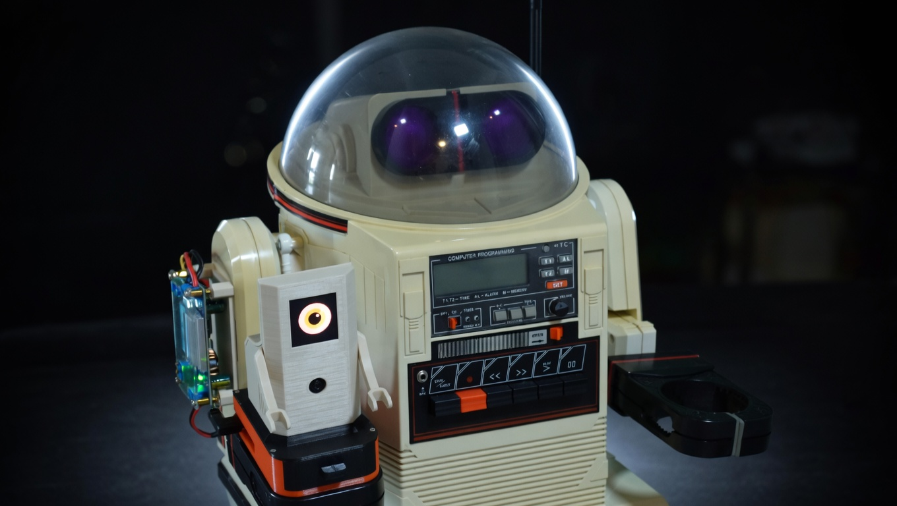
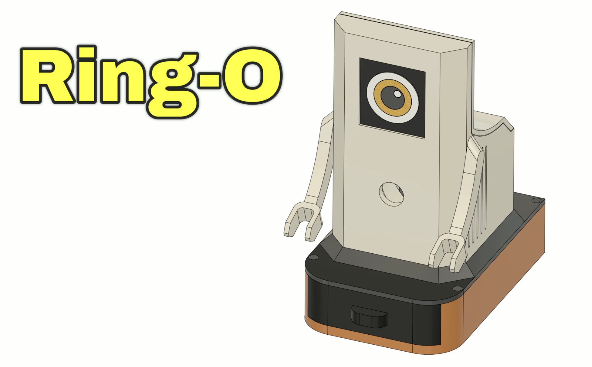
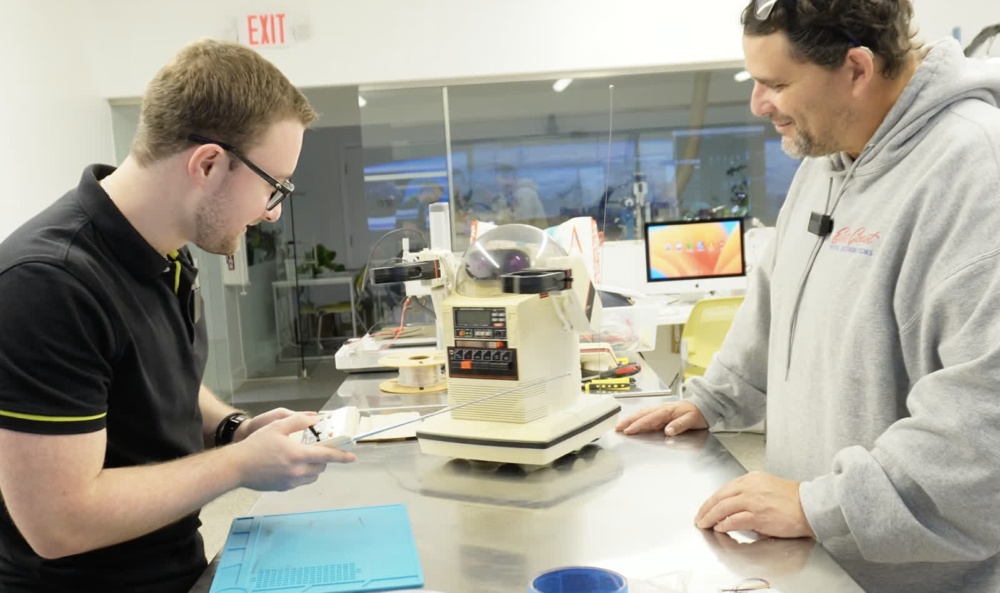

The robot sees. The robot moves. The robot finds you.
In Part 1, I restored the hardware. In Part 2, I added Bluetooth control and gave it a voice. In Part 3, I wired up the AI camera and built the software stack. Now in Part 4, it all comes together. The Omnibot is actually doing the thing. It sees objects, makes decisions, and rolls toward you on its own.
But first, I had to get the robot back.
Getting the Bot Back from PLACITECH
When I left off in Part 3, the AI software was written but the physical build wasn't done. I handed the Omnibot off to PLACITECH for the hard part: mounting the power system, designing enclosures, and building Ring-O.
Meet Ring-O, a tiny companion robot whose job is to give Omnibot computer vision. He's basically a Raspberry Pi 5 with an IMX500 AI camera and an OLED eye display, packed into a custom enclosure that sits on top of Omnibot. The name comes from looking like a Ring camera. He runs all the AI (object detection, navigation, the dashboard) and tells Omnibot where to go via Bluetooth audio tones.

PLACITECH handled the full physical build and integration of the system, designing and assembling the companion module for Omnibot that houses the Raspberry Pi, camera, OLED display, and cooling. He also built a custom portable power system from scratch, including a 2S2P lithium-ion battery pack with a BMS and a buck converter to reliably power everything during live demos. From wiring and soldering to 3D design, printing, and final assembly, he brought all the pieces together into a clean, fully self-contained system mounted onto Omnibot.
The robot came back looking great. But the software? That was half-baked. The AI stack from Part 3 had bugs. A lot of them. Detection was running but bounding boxes were invisible, the LLM navigation didn't work, commands were flooding the robot, and the coordinate math was wrong. It looked impressive in the blog post but it needed serious debugging to actually work.
That's what this post is really about: the messy, honest process of taking a demo that almost works and turning it into a robot that actually finds people. Or cats, dogs, chairs, bottles, laptops, even pizza. Any of the 80 objects YOLO knows. Then drives right up to them.
Debugging the AI (It Was Broken in Ways I Didn't Expect)
When I fired up the dashboard for the first time with Ring-O mounted on Omnibot, the detection panel showed "person (82%), laptop (73%), chair (50%)." The AI camera was seeing everything. But there were zero green boxes on the video feed. The robot could identify objects but had no idea where they were on screen.
This kicked off a deep debugging session that uncovered bug after bug in the detection pipeline.
The Great LLM Experiment (And Why It Failed)
Once the bounding boxes were working and the robot could actually see where things were, I moved on to navigation. In Part 3, I'd built the system around Groq's cloud LLM. The idea was that the camera sees a person on the left side of the frame, tells the LLM, and the LLM responds with "turn left."
It didn't work. At all.
I tested two models on Groq. Llama 3.1 8B (the fast one) and Llama 3.3 70B (the smart one). Both had the same problem: no matter where the person was in the frame, dead center, far left, far right, the LLM always responded with {"commands": ["right"]}. Every. Single. Time.
The robot just spun in circles.
| What I Tested | Latency | Result |
|---|---|---|
| Llama 3.1 8B (Groq) | ~15 seconds | Always says "right" |
| Llama 3.3 70B (Groq) | ~15 seconds | Always says "right" |
| Rule-based math | ~0 milliseconds | Actually correct |
The 15-second latency was the other killer. Every decision took 15 seconds, which meant the dashboard froze, the robot was blind between commands, and by the time it decided to turn right (incorrectly), the person had already moved.
I had the navigation logs to prove it:
CMD mode=llm commands=['step("right")'] response={"commands": ["right"]}Person at center (x:331 out of 640). LLM says right. Person at left (x:4). LLM says right. Person filling 80% of the frame. LLM says right.
What Actually Works: Math
The fix was embarrassingly simple. Instead of asking an LLM to interpret position data, I just... did the math:
- If the person's center pixel is left of frame center, turn left
- If centered, go forward
- If right, turn right
- If the person fills more than 60% of the frame, stop, you're close enough
Zero latency. Correct every time. The rule-based navigation engine (navigation.py) replaced hundreds of lines of LLM prompt engineering with about 50 lines of position arithmetic.
The lesson: LLMs are incredible at language, reasoning, and creative tasks. They are not good at "the number 331 is greater than 224 and less than 416, therefore output forward." That's what math is for.
I kept the LLM code in the repo for a future "describe what you see" voice feature, where latency is acceptable and you actually need language understanding. But for real-time robot navigation? Rules win.
The Bounding Box Saga
Getting accurate bounding boxes on the video stream was its own multi-day adventure. The IMX500 AI camera runs YOLO11 on its dedicated neural chip at 30fps. The detection itself worked great from day one. The problem was mapping the model's coordinate system to the actual video frame.
Here's what I discovered the hard way:
The intrinsics lie. The model metadata says bbox_normalization: True (meaning "divide coordinates by 640 to normalize them"). But the YOLO11 post-processed model already outputs normalized [0,1] coordinates. Dividing by 640 again produces values like 0.001. Every bounding box had zero width and zero height. Detections showed up in the panel but no green boxes on the video.
The coordinate converter doesn't work. Picamera2's convert_inference_coords() function is supposed to handle the model-to-screen mapping. It returned coordinates like x:2562, y:148800, width:0, height:0 for a person standing right in front of the camera. I confirmed this by injecting JavaScript into the live dashboard to capture the actual bbox values being sent over WebSocket.
The axis swap was wrong. The model outputs [x1, y1, x2, y2] but the code was swapping to [y1, x1, y2, x2] based on the intrinsics metadata. This transposed every bounding box. The keyboard box ended up on the person's head.
The aspect ratio matters. The model input is 640x640 (square) but the camera output is 640x480. The ISP letterboxes the image with 80 pixels of padding top and bottom. Without compensating for that padding, all y-coordinates were shifted down.
The fix: auto-detect whether boxes need normalization (check if values are > 2.0), skip the axis swap, and compensate for letterbox padding. About 10 lines of math replacing a library function that didn't work.
The Dashboard
The web dashboard runs on the Pi and is accessible from any device on the network. It's built with Flask and Socket.IO for real-time updates.
The main dashboard (/) shows:
- Live camera feed with green bounding boxes around detected objects
- Navigation log with real-time decisions: "person CENTERED, forward", "person LEFT, turn left", "person fills 64%, STOP"
- Detection history, a rolling log of everything the camera sees
- Set Task / End Task to start and stop navigation without killing the whole system
- Describe button that asks the LLM to describe the scene and speaks it through the robot
- Manual controls with directional buttons, dance patterns, and speech
The kids dashboard (/kids) has a neon synthwave aesthetic with:
- Big mission buttons: Find Human, Find Ball, Explore, Dance
- "What Do You See?" button that makes the robot describe what it sees out loud
- "End Mission" button to stop navigation without powering down
- Big directional controls for manual driving
- A "Robot Brain" panel showing what the robot is thinking in real-time
- LED status indicators for power, status, and Bluetooth
The kids version was designed so my son and other kids at Maker Faire can operate the robot without knowing anything about AI or Python. Press "Find Human" and the robot goes looking. Press "What See?" and it tells you what it found. Press "Dance" and it dances. Press the big red STOP button when things go wrong.
"What Do You See?"
So the LLM failed at navigation, but it turns out it's great at one thing: describing what the robot sees. When you press the Describe button, it sends the current detections to Groq's Llama 3.3 70B with a prompt like "What do you see: person (85%), keyboard (56%), laptop (43%)" and gets back something like "I see a person and a keyboard."
The robot then speaks that description out loud through its speaker. The response is kept to under 10 words and sanitized for the text-to-speech engine. Latency doesn't matter here since you're asking a question and waiting for an answer, not trying to drive in real-time.
This is the kind of thing LLMs are actually good at. Turning a list of detection labels into a natural sentence. Not "the number 331 is greater than 224, therefore turn left."
Upgrading to YOLO11
The project started with YOLOv8, and at one point I tried upgrading to YOLO11 nano which was already installed on the Pi (imx500_network_yolo11n_pp.rpk). When the bounding boxes were still broken after the switch, I thought maybe YOLO11 was too heavy and pulling too much CPU. So I went back to YOLOv8 to rule that out. Turns out the model wasn't the problem at all. It was the coordinate math the whole time. Once I fixed the actual bugs, I switched back to YOLO11 and it ran fine. Same 80 COCO classes, same 640x640 input, slightly better accuracy, and inference still runs on-chip so the Pi CPU barely notices. The upgrade was a one-line change in object_detector.py.
The IMX500 model ecosystem is actually impressive. The camera chip has 16MB of flash that can cache multiple models. You can swap between object detection, pose estimation, and image classification without re-uploading firmware. For this project I'm sticking with detection, but the pose estimation model could be interesting for gesture-controlled driving.
What a Run Looks Like
Here's an actual navigation sequence from the logs, with the robot finding and approaching a person:
10:24:11 person(78%) x:223 CENTERED forward
10:24:13 person(73%) x:226 CENTERED forward
10:24:15 person(73%) x:167 CENTERED forward
10:24:17 person(73%) x:186 CENTERED forward
10:24:19 person(68%) x:197 CENTERED forward
10:24:21 person(68%) x:190 CENTERED forward
10:24:24 person(62%) x:226 RIGHT turn right
10:24:26 person(68%) x:0 LEFT turn left
10:24:28 person(73%) x:216 CENTERED forward
10:24:39 person(78%) x:148 CENTERED forward
10:24:41 person(68%) x:131 fills 62% STOP
10:24:49 person(73%) x:146 fills 67% STOPSix seconds of forward approach. A course correction when it drifted right. Re-centered and continued forward. Stopped when the person filled 62% of the frame. The whole sequence took about 30 seconds from "Find Human" to face-to-face.
Ring-O's Eye
Ring-O has his own personality thanks to the SSD1351 OLED eye display, a 128x128 pixel color screen showing an animated eye that:
- Looks happy (dilated pupil) when it sees a person
- Looks surprised when it spots a cat or dog
- Tracks the direction of movement (looks left when turning left)
- Blinks randomly every 3-7 seconds
- Goes sleepy after 30 seconds of inactivity
Ring-O's eye doesn't affect navigation at all. It's pure personality. But when a kid walks up and Ring-O's eye lights up and gets bigger because it's "happy" to see them? That's the magic that turns a wheeled box with a camera into a character. Omnibot has the body. Ring-O has the soul.
Making It Faire-Ready
Debugging the AI made it work. Making it keep working for a public event took another pass. If a robot at Maker Faire freezes after 20 minutes while a kid is watching, you don't get a second shot at that demo. So I rebuilt the deployment layer:
- Auto-recovery. The dashboard runs as a systemd service with
Restart=on-failure. If anything crashes, it's back in five seconds. If the camera thread stalls for 60 seconds (seen a couple times on long runs), the process exits on purpose so systemd can restart it clean. Better than a silently-stuck robot. - Health endpoint.
GET /healthzreturns a JSON snapshot of camera age, FPS, Bluetooth state, eye liveness, and last-detection time. Returns HTTP 503 when anything's degraded, so a monitor or even the dashboard itself can flag trouble. - Pre-launch smoke test. A quick script imports every module, grabs one camera frame, plays a muted tone, and exits non-zero if anything failed. Runs before the dashboard launches so a broken deploy fails fast instead of flapping.
- Bluetooth caching. The BT status query used to run
bluetoothctlsynchronously in the Flask request; if the BT stack hung, the dashboard hung. Now a background thread polls every 5 seconds and/api/bluetoothjust reads the cache. - "Busy, try again" feedback. Kids at the faire will mash buttons. The robot serializes commands (can't dance and speak at the same time), so the UI now shows a clear "Busy, try again" when a click lands mid-command instead of silently dropping it.
None of this is glamorous, but it's the difference between "it works on my desk" and "it works for eight hours with strangers pressing buttons."
The Full Stack (All Inside Ring-O)
For the technically curious, here's the whole pipeline. Data flows top to bottom. Pixels come in from the camera, object detections get mapped to screen coordinates, the navigation engine picks a direction, the executor turns it into sound, and the Bluetooth speaker plays tones that the 1984 motor board interprets as commands. Meanwhile the eye reacts and the dashboard streams it all to the browser.
| Layer | Component | Job |
|---|---|---|
| Eyes | IMX500 AI Camera | Runs YOLO11 on-chip at 30fps. Zero load on the Pi's CPU. |
picamera2 | Grabs each frame with its detection metadata (640x480). | |
object_detector.py | Parses YOLO11 output. Handles the coordinate math the library got wrong (normalization, axis swap, letterbox padding). | |
| Brain | navigation.py | Rule-based engine. Picks forward, left, right, or stop from the bounding box position and size. Replaced the LLM. |
| Body | robot_executor.py | Turns intent into frequencies. Forward is 1614 Hz. Left is 2208 Hz. |
audio_commander.py | sox synthesizes sine waves, pipes them to pw-play, and PipeWire routes the audio to the Bluetooth speaker inside Omnibot. | |
| Face | eye_display.py | Drives the SSD1351 OLED. Happy, surprised, sleepy, tracking, blinking. |
| UI | dashboard.py | Flask plus Socket.IO plus an MJPEG stream. Both the pro dashboard and the kids mission dashboard live here. |
All of it open source at github.com/MarioCruz/omnibotAi if you want to poke at it.
Audio tones travel via Bluetooth to the Omnibot's cassette input, which the original 1984 hardware interprets as movement commands. Forward is 1614 Hz. Left is 2208 Hz. Speaker on/off tones (1422 Hz / 4650 Hz) toggle the robot's internal relay between "interpret this as a motor command" and "pass this audio to the speaker". Every spoken phrase is sandwiched between two control tones. It's gloriously hacky.
Come See It Live

The Omnibot will be at Maker Faire Miami 2026.
Come say hi. Let it find you. Challenge it to navigate around chairs. Ask a kid to drive it with the arcade dashboard. I'll have the code running live with the dashboard visible on a monitor so you can see exactly what the robot sees and thinks in real-time.
The full source code is open on GitHub: github.com/MarioCruz/omnibotAi
Follow the project as it evolves on Instagram @mariothemaker.
What's Next
This isn't the end. The robot works, but there's more to explore:
- Custom model training. The IMX500 supports training custom YOLO models. Imagine training it on specific objects: "find Mario's keys" instead of just "find a person." Sony's Brain Builder tool makes this possible with as few as 50 images.
- Two-way conversation. Scene description already works (see the "What Do You See?" section above). Next up is letting visitors ask follow-up questions out loud, with a microphone feeding a speech-to-text model and the robot answering through the speaker.
- Multi-room navigation. Right now the robot stops when it reaches the target. A state machine that handles "target lost, search pattern, reacquire" would make it much more capable.
- Visitor memory. Recognizing returning visitors at Maker Faire and greeting them by interaction count: "Welcome back! You're visitor number 47."
The 1984 Tomy Omnibot was a promise of a robotic future that the technology of its time couldn't deliver. Forty years later, a $70 AI camera, a $100 single-board computer, and a tiny companion named Ring-O finally make good on that promise. The future just needed a buddy to help out.
See you at Maker Faire.
The Omnibot restoration series:
- Part 1: Hardware restoration
- Part 2: Bluetooth control and voice
- Part 3: AI camera and software stack
- Part 4: It's alive (this post)
All code: github.com/MarioCruz/omnibotAi